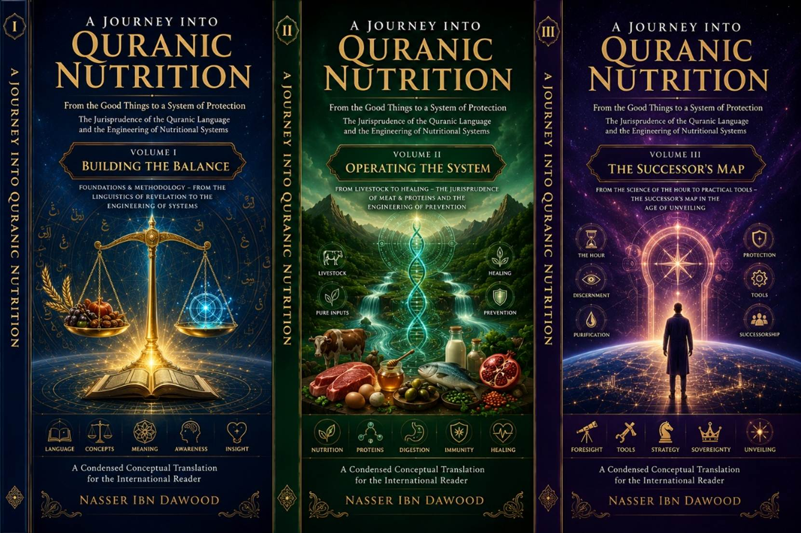

## Volume II: Operating the System
**A Condensed Conceptual Translation for the International Reader**
---
Knowledge is a universal right. The author firmly believes that wisdom should not be locked behind paywalls or language barriers.
- **Global Access Policy:** All books in this library are available for free in multiple digital formats (PDF, HTML, DOCX, TXT).
- **The Digital Library:** As of early 2026, the collection hosts 68 volumes (34 in Arabic and 34 in English), fully optimized for AI-assisted research and digital archiving.
- **Official Platforms:**
- Main Website: nasserhabitat.github.io/nasser-books/
- GitHub: nasserhabitat/nasser-books
---
This English edition is a **condensed conceptual adaptation**. It is not a word-for-word translation, but rather an "extraction of essence." It presents the core philosophical framework in accessible English, omitting the exhaustive linguistic debates and classical references found in the original Arabic text.
**For the academic researcher:** The original Arabic version remains the primary source for comprehensive linguistic analysis, detailed exegesis (Tafsir), and the complete bibliography.
---
The Quran describes four rivers flowing in Paradise: water, milk, honey, and wine. This is not a random list of pleasant drinks. It is a **hierarchy of certainty** – four levels of how truth flows through the human being.
Water is the universal carrier. It has no color or taste of its own, yet it enables everything. In the human system, water represents **basic faith** – the certainty that there is a Creator, that life has meaning. Without this, nothing else can flow.
**Functional role:** Hydration of the questioning soul. It prevents the system from burning out under the heat of doubt.
The Quran describes milk as coming from between dung and blood – a pure secretion extracted from a messy interior. This is **the original programming of human nature** (*Fitrah*). It is the knowledge of right and wrong that we are born with, before culture and education corrupt it.
**Functional role:** Feeding the conscience with untainted data. Milk is "pure and palatable to drinkers" because it aligns perfectly with human design.
Honey is not a raw material. It is the product of a complex process: bees collect nectar from thousands of flowers, transform it internally, and produce a new substance that has healing properties. Honey represents **refined certainty** – wisdom that has been digested, tested, and turned into something that repairs what is broken.
**Functional role:** Debugging the system. {فِيهِ شِفَاءٌ لِلنَّاسِ} – "In it is healing for people." Honey fixes errors in the body and the soul.
In Paradise, wine is described as "neither causing headache nor intoxication." This is **peak certainty** – the state where the distance between the knower and the known disappears. It is not drunkenness; it is **lucidity so complete that it feels like joy**.
**Functional role:** The reward of integration. When the system is fully calibrated, operating at peak efficiency, the experience of truth becomes pleasurable.
| Flow | Level of Certainty | Technical State | Function |
|------|-------------------|-----------------|----------|
| Water | Basic | Raw fluidity | Connectivity |
| Milk | Innate | Pure origin | Firmware feeding |
| Honey | Therapeutic | Refined data | Error correction |
| Wine | Ecstatic | Total integration | Peak performance |
---
The Quran mentions two additives to drinks in Paradise: camphor (cooling) and ginger (warming). These are **system regulators**.
In moments of intense spiritual experience or cognitive overload, the system needs to **calm down**. Camphor represents tranquility, composure, and the ability to remain dignified in the face of overwhelming truth. It prevents the self from burning out.
At other times, the system needs **energy and drive**. Ginger represents the motivation to act, the heat of willpower, and the capacity to move from insight to implementation.
Together, they create **balance** – a human being who is neither frozen in fear nor burning with reckless enthusiasm.
---
If the rivers of Paradise represent healthy flow, the drinks of Hell represent **system failure**.
This is the state of **overheating** – when the system is overloaded with false inputs, toxic ideas, and corrupted desires. It melts the internal circuits. The person is in constant agitation, unable to rest or reflect.
This is the opposite extreme: **stagnation and putrefaction**. When the system shuts down, data becomes corrupted, and only waste remains. It is cold, foul, and thick – unable to flow anywhere.
These are not merely punishments. They are **descriptions of existential states** that result from refusing to drink from the rivers of guidance.
---
The Quran uses the word *sakar* to describe the effect of certain drinks: the mind becomes blocked, perception distorted, and judgment suspended.
The gradual prohibition of intoxicants in the Quran follows a logical engineering sequence:
1. **Acknowledge the harm:** They have some benefit but greater sin.
2. **Restrict around prayer:** Do not approach prayer while intoxicated.
3. **Total prohibition:** They are filth from Satan's work; avoid them completely.
This is not puritanism. It is **system protection**. The mind is the processor that connects the human being to divine guidance. Anything that disrupts that connection is a threat to the entire enterprise of human existence.
---
When the Children of Israel wandered in the wilderness, God provided them with **manna** (a sweet substance that fell from the sky) and **quail** (birds that appeared for them to eat). This was not just a historical miracle. It is a **model of divine provisioning** – an operating system where sustenance arrives with minimal mediation.
Manna required no planting, no harvesting, no cooking. It was **ready-to-use data**. In human life, this represents moments of inspiration, sudden clarity, and gifts of understanding that come without struggle.
Quail provided protein without the effort of hunting or herding. It represents the energy needed for movement and elevation – the capacity to leave behind the heavy attachments of earthly life.
The Children of Israel grew tired of manna and quail. They asked for cucumbers, garlic, lentils, and onions – foods that require **tilling the soil, sweating, and attachment to place**. The Quranic critique is not that these foods are bad. It is that **choosing them represented a spiritual downgrade**:
- From free, direct provision → to anxious, labor-intensive production
- From trust in divine sustenance → to control of material resources
- From lightness → to heaviness
This is the **fall from the cloud system** to local storage – a choice that comes with psychological cost.
---
Each of these foods, in the Quranic semiotic network, carries a specific symbolic weight:
| Food | Symbolic Meaning |
|------|------------------|
| Cucumber | Surface-level expansion; horizontal spread without depth |
| Garlic | Layers of concealment; complexity that requires painful peeling |
| Lentils | The grind of daily survival; exhaustion for basic needs |
| Onions | Multiple veils; tears before reaching the core |
The Quran does not forbid these foods. But when the Children of Israel **preferred them** over the heavenly provision, it revealed a psychological state: a desire to return to the familiar, the controllable, the low-effort-but-high-anxiety mode of existence.
**The lesson:** The food you choose reflects the state of your soul. Heaviness in food leads to heaviness in consciousness.
---
The Quran describes grain (*habb*) as having "husk" (*asf*) and "fragrance" (*rayhan*). This is a **three-layered system of knowledge**:
- **The grain (core):** The essential truth, the seed of wisdom.
- **The husk (protection):** The methodology, the rules of interpretation, the firewall that protects the core from corruption.
- **The fragrance (beauty):** The aesthetic and ethical dimension – knowledge presented with grace, attracting hearts rather than repelling them.
True knowledge is not raw data. It is protected by methodology and delivered with beauty. Without the husk, the grain is vulnerable. Without the fragrance, it is dry and uninviting.
---
The Quran distinguishes between the meat of land animals (livestock) and the meat of sea creatures (fish).
- Requires **ritual slaughter** (*tadhkiyah*) – a process of purification.
- Is dense, heavy, and requires significant metabolic energy to digest.
- Symbolizes **foundational knowledge** – the kind that builds the structure of a civilization: laws, institutions, hard sciences, manual skills.
- Too much of it leads to **rigidity** – a hard-hearted, dogmatic, inflexible system.
- Requires no ritual slaughter; its purity comes from its environment (flowing water).
- Is light, soft, and easy to digest.
- Symbolizes **fluid, real-time knowledge** – inspiration, intuition, spiritual insight, adaptive wisdom.
- Too much of it without foundation leads to **formlessness** – no anchor, no structure, drifting.
The human being needs both: the stability of livestock and the fluidity of fish. The Quranic diet is not about excluding one; it is about **balancing** them.
| Aspect | Livestock (Land) | Fish (Sea) |
|--------|------------------|------------|
| Data type | Foundational, established | Streaming, real-time |
| Processing | Requires effort (slaughter) | Ready to use |
| Risk of excess | Rigidity | Formlessness |
| Symbolic domain | Earth, stability | Ocean, infinity |
---
Birds break the bonds of gravity. Their meat represents **knowledge that lifts you** – insights that free you from the prison of material obsession. In Paradise, believers are promised "bird meat that they desire" – this is the reward of spiritual lightness.
Eggs are described in the Quran as "hidden" – protected until the right moment. They represent **seeds of truth** that are not yet manifest, potential that awaits the right conditions to hatch. The egg is a promise of new life, new consciousness, new beginnings.
---
The Quranic term *tadhkiyah* (often translated as "ritual slaughter") comes from the root *dh-k-w*, which means **intelligence, sharpness, and purification**.
Ritual slaughter is not an arbitrary act of killing. It is a **protocol** for transforming raw material into permissible, wholesome substance:
1. **Cutting the throat, windpipe, and blood vessels** – severing the dependency on the body.
2. **Draining the blood** – removing the carrier of heat, conflict, and corruption.
3. **Invoking God's name** – acknowledging that the source of all provision is divine.
4. **Facing the direction of prayer** – aligning the act with ultimate purpose.
This is not about the animal alone. It is about **training the human being** to transform raw inputs – whether food, ideas, or impulses – into something pure and beneficial.
The Quran says: {إِلَّا مَا ذَكَّيْتُمْ} – "except what you have purified (through tadhkiyah)." This means that even things that are normally forbidden (dead animals, blood, certain animals) may become permissible if they are **transformed through knowledge and necessity**.
This is a profound principle: **Nothing is absolutely hopeless. With sufficient intelligence and need, even the corrupt can be redeemed.**
---
The Quran distinguishes between hunting in the sea and hunting on land during pilgrimage:
- **Sea hunting is always permitted** (even in a state of sacred consecration). Sea = divine knowledge, always available, never restricted.
- **Land hunting is prohibited** during pilgrimage. Land = human knowledge, which must sometimes be paused to focus on higher matters.
**The implication:** Direct spiritual insight (the "sea") never needs to be suspended. But worldly knowledge, empirical inquiry, and practical skills ("land") must sometimes step aside for the sacred.
---
The Quran forbids eating the remains of a prey that a wild beast has partially consumed. This is not just about food safety. It is a **warning against consuming leftover ideas** – systems of thought that have already been "chewed" by failed experiments, exhausted paradigms, and broken methodologies.
But the verse adds: {إِلَّا مَا ذَكَّيْتُمْ} – "except what you have purified." This means:
- Old, failed ideas can be **revisited with new intelligence**.
- Traditions that have become lifeless can be **revived through fresh understanding**.
- Even what was once forbidden may become useful if **transformed**.
This is the **intellectual innovation protocol** – not blind rejection of the past, but creative renewal.
---
The Quran devotes multiple verses to bees and honey. The bee receives "divine inspiration" to build hives and collect nectar. The honey that emerges is **healing for people**.
This is a model for the human being:
- **Receive inspiration** (from revelation, nature, or intuition).
- **Process it internally** (reflect, digest, integrate).
- **Produce something healing** (wisdom, kindness, useful work).
Honey is not just a food. It is a **symbol of transformed experience** – raw data turned into therapeutic insight.
---
One of the most concise and powerful verses in the Quran regarding health is:
> **{وَكُلُوا وَاشْرَبُوا وَلَا تُسْرِفُوا}** – "Eat and drink, but do not be excessive." (Quran 7:31)
This is the **safety valve** of the human system. Excess is not just about quantity. It includes:
- **Excess in variety** (mixing too many foods in one meal)
- **Excess in processing** (overcooking, over-refining)
- **Excess in frequency** (eating constantly without genuine hunger)
- **Excess in attachment** (making food the center of life)
The verse links eating and drinking with prohibition of excess, then warns: "Indeed, He does not love the excessive." In systemic terms: **Excess causes overload, and overload corrupts the system.**
---
The Quran speaks of healing in two domains:
1. **Healing for the chests (hearts/souls):** Through the Quran itself. This is the **software repair** – correcting beliefs, removing resentment, calming anxiety.
2. **Healing for the bodies:** Through pure foods, honey, and natural remedies. This is the **hardware repair** – restoring physical function.
These two are not separate. A disturbed heart weakens the body. A diseased body clouds the heart. True healing addresses both.
---
The modern epidemic of chronic diseases can be understood as a **failure of mediation**. Each disease corresponds to a specific type of input corruption:
| Disease | Underlying Mediation Problem |
|---------|------------------------------|
| Obesity | False satiety – high volume, low nutrition |
| Anxiety | Unstable energy supply – spikes and crashes |
| Chronic fatigue | High processing load – constant digestion of toxins |
| Brain fog | Biological noise – inflammation consuming cognitive resources |
| Autoimmune disorders | Foreign inputs – the body attacking what it cannot recognize |
The solution is not more medication. It is **reducing mediation** – returning to foods that the body recognizes and processes efficiently.
---
Modern industrial food systems are not neutral. They represent a **war on human nature** (*Fitrah*).
- **Lab-grown meat** – "meat" without blood, without soul, without the natural cycle of life and death.
- **Insect protein powder** – foods that the human instinct naturally rejects, engineered to override that instinct through processing and marketing.
- **Genetically modified seeds** – designed to be dependent on proprietary chemicals.
- **The "Green Plans"** (e.g., Morocco's Green Plan, Agenda 2030) – presented as sustainable development, but often serving corporate control over food systems.
Organizations such as the **World Economic Forum (WEF)** , the **Gates Foundation**, and the **Rockefeller Foundation** are identified in the book as key drivers of this transformation – not necessarily through conspiracy, but through concentrated financial power that shapes research, policy, and public perception.
The goal is not simply "feeding the world." It is **controlling the world's food supply** – and through it, controlling human health, behavior, and consciousness.
> **{كُلُوا مِمَّا فِي الْأَرْضِ حَلَالًا طَيِّبًا}** – "Eat from what is on earth, lawful and pure." (Quran 2:168)
The command is to return to **earth-based, low-mediation, nature-aligned food**. This is not nostalgia. It is **sovereignty**.
---
- Eat whole, seasonal, local foods.
- Listen to your body's signals (true hunger vs. craving).
- Avoid excess in quantity, variety, and frequency.
Traditional cookware (copper, clay, cast iron) interacts with food differently than industrial non-stick coatings. Choose wisely.
### 3. Seasonal Cleansing
- **Intermittent fasting** (16/8 pattern) activates autophagy – the body's self-cleaning process.
- **Extended fasting** (as in Ramadan) provides deeper reset.
- Regular physical activity flushes toxins.
- Pure water is the universal carrier – drink enough.
> **{أَلَا بِذِكْرِ اللَّهِ تَطْمَئِنُّ الْقُلُوبُ}** – "Surely in the remembrance of God do hearts find rest." (Quran 13:28)
Anxiety destroys immunity. Faith and tranquility strengthen it.
---
Modern medicine saves lives. But clinical guidelines are not neutral. They are often shaped by pharmaceutical companies, conflict of interest, and institutional inertia.
- **Do not reject medicine entirely.** The Prophet ﷺ said: "God has sent down both the disease and the cure."
- **Do not blindly follow protocols.** They are human judgments, not divine commandments.
- **Prioritize prevention** through nutrition and lifestyle before reaching for pills.
- **In necessity, use medicine** – but as a tool, not a master.
In many countries, any attempt to integrate religious guidance with medical practice outside official institutions is suppressed. This protects patients from charlatans – but it also **protects the industrial system** from competition.
The result: A closed circle of poor diet → chronic disease → lifelong medication → corporate profit.
Breaking out requires **conscious eating, critical thinking, and the courage to question**.
---
| Term | Role in System | Example |
|------|----------------|---------|
| *Tayyibat* (Pure inputs) | Healthy fuel | Natural food, true knowledge, good company |
| *Hasanat* (Good outputs) | Efficient performance | Charitable acts, skilled work, wise speech |
| *Sayyi'at* (Bad outputs) | Operational errors | Mistakes, sins, harmful actions |
| *Khaba'ith* (Corrupt inputs) | Systemic viruses | Toxins, lies, destructive ideologies |
Pure inputs produce good outputs. Corrupt inputs produce bad outputs. You cannot feed the system garbage and expect it to produce gold.
> **{إِنَّ الْحَسَنَاتِ يُذْهِبْنَ السَّيِّئَاتِ}** – "Indeed, good deeds erase bad deeds." (Quran 11:114)
This is not magic. It is **calibration**. When you perform a good deed, you reset the system. The error is overwritten by correct operation.
---
The Quran does not mention germs by name – they were unknown at the time of revelation. But the concept of **hidden, multiplying, corrupting agents** is fully present.
Germs are the archetype of *khaba'ith* – tiny, invisible enemies that enter the system unnoticed and multiply until they cause systemic failure.
| Level | Type | Countermeasure |
|-------|------|----------------|
| Visible *khabith* | Dead animals, blood, pork | Avoidance |
| Intellectual *khabith* | False ideologies, lies | Critical thinking, discernment |
| Microscopic *khabith* | Bacteria, viruses | Hygiene, immunity, natural antimicrobials (garlic, honey, copper) |
The lesson: **Not all enemies are visible. Vigilance must extend to the unseen.**
---
> **{ظَهَرَ الْفَسَادُ فِي الْبَرِّ وَالْبَحْرِ بِمَا كَسَبَتْ أَيْدِي النَّاسِ}** – "Corruption has appeared on land and sea because of what human hands have earned." (Quran 30:41)
Pollution is not just an environmental issue. It is a **corruption of the very medium** in which human life operates:
- Polluted soil produces food with altered properties.
- Polluted water disrupts the body's signaling systems.
- Polluted air damages the respiratory and nervous systems.
The Quran links **corruption of the environment** with **corruption of human consciousness**. They are two sides of the same process.
---
The Quran swears by "Time" (*Al-Asr*). But what is time, systemically?
Time is not just a sequence of moments. It is **the container of attention**. The smallest unit of focused attention is the **minute**.
- Whoever cannot control a single minute of presence will lose the entire day.
- Whoever loses the day loses the week.
- Whoever loses the week loses life.
The **one-minute practice**: Pause every hour for 60 seconds. Observe your breath, your posture, your attention. Reset.
---
Friday is the weekly **system synchronization**. The congregational prayer is not just a ritual; it is a **data injection** – a collective recalibration of the community's direction and priorities.
Saturday, for the Children of Israel, was a day of complete rest. The violation of the Sabbath was punished severely – not because God is cruel, but because **forcing the system to run without maintenance destroys it**.
In modern life, the principle remains: **One day of true rest – no work, no screens, no consumption – is necessary for the system to repair itself.**
---
At the end of each week, perform a **system calibration**:
| Question | What to Check |
|----------|---------------|
| Input purity | What did I eat? What did I read? What did I watch? |
| Attention quality | How many minutes of genuine presence did I have? |
| Output integrity | What good did I produce? What harm did I cause? |
| Social synchronization | Did I connect with truth-seeking companions? |
| Patience reserve | Did I maintain composure under stress? |
This is the practical application of the last two verses of Surah Al-Asr:
- **Advising each other to truth** – mutual accountability.
- **Advising each other to patience** – mutual support.
---
There is a direct, causal link between:
- Loss of inner peace → Chronic anxiety → Suppressed immunity → Disease.
The Quran teaches that **consciousness is the first line of defense**.
### The Pathway of Collapse:
```
Loss of discernment → Unfiltered inputs → Internal noise → Anxiety → Weakened immunity → Sickness
```
```
Purification of inputs → Clarity → Tranquility → Strong immunity → Wellness
```
**The practical implication:** To heal the body, you may need to heal the mind. To heal the mind, you may need to purify what you consume – not just food, but also news, relationships, and entertainment.
---
This book does not give you a fixed diet. It gives you **tools** to build your own:
1. **The tool of discernment:** Distinguish between *tayyib* (pure) and *khabith* (corrupt) in all domains.
2. **The tool of mediation reduction:** Choose inputs that are close to their natural state.
3. **The tool of fasting:** Periodically suspend input to reset sensitivity.
4. **The tool of weekly calibration:** Review your inputs and outputs every seven days.
5. **The tool of companionship:** Surround yourself with people who value truth and patience.
Your system will be unique to you. No one else's diet or schedule can be imposed on you. But the **principles** are universal.
---
There is a direct relationship between what you eat and how you pray.
- Heavy, highly mediated food → sluggish body → distracted mind → mechanical prayer.
- Light, natural food → alert body → clear mind → present prayer.
The Prophet ﷺ said: "A human being fills no worse container than their stomach." But this is not about starving. It is about **conscious eating** – eating in a way that supports, not undermines, your spiritual life.
---
In the night journey and ascension (*Isra' wa Mi'raj*), the Prophet's chest was opened, his heart was washed with Zamzam water, and a vessel of milk was offered to him (he chose milk over wine). This is profoundly symbolic.
- **Blood** represents the earthly circuit – the body's survival system, tied to matter, conflict, and passion.
- **Milk** represents purified, innate knowledge – the original programming.
- **Wine** represents ecstatic intoxication – bypassing the intellect (forbidden in this world, permitted in Paradise).
The cleansing of the heart with Zamzam water symbolizes the **transformation of the blood's energy** from matter-bound to light-carrying. The Prophet's body became capable of ascension because his blood was no longer just blood – it had become a carrier of divine light.
For the ordinary believer, this is the **goal of purification** (*tazkiyah*): to transform the raw energy of the self into something that can rise.
---
This journey began with a question: **Is food just biological matter, or is it an input that shapes consciousness, insight, and behavior?**
The answer, after two volumes, is clear: **Food is one of the most powerful tools for building – or destroying – the human being.**
The Quran does not give us a fixed menu. It gives us:
- **Standards** (*tayyibat* vs. *khaba'ith*).
- **Principles** (no excess, no harm, no compulsion).
- **Methods** (mediation reduction, periodic fasting, weekly calibration).
- **Aim** (*tazkiyah* – purification and growth toward successful vicegerency).
The Prophet ﷺ said: "When a human being dies, their deeds cease except for three: ongoing charity, beneficial knowledge, or a righteous child who prays for them."
In the language of this book:
- **Ongoing charity** = A system you built that continues to operate after you.
- **Beneficial knowledge** = The tools and methods you passed on.
- **A righteous child** = A human being you raised to carry the light forward.
This is not just about food. This is about **engineering a legacy**.
---
> **"And that there is not for humanity except what they strive for."** (Quran 53:39)
Strive, then, for pure inputs.
Strive for clear perception.
Strive for a body that serves the soul.
Strive for a legacy that outlasts the body.
And remember always:
The healing is from God. The food is from God. The life and death are from God.
Our role is to **choose wisely** – and then to trust.
---
**End of Volume II: Operating the System**
*Continue the journey with Volume III: The Successor's Map – From the Science of the Hour to Practical Tools*
---
| Arabic Term | Simplified Meaning |
|-------------|---------------------|
| *Tayyib / Tayyibat* | Pure, wholesome, compatible with human nature |
| *Khabith / Khaba'ith* | Corrupt, toxic, incompatible |
| *Fitrah* | Innate human nature; original design |
| *Tadhkiyah* | Purification protocol (ritual slaughter as model) |
| *Salwa* | Psychological tranquility from sufficiency |
| *Tazkiyah* | Purification of the self |
| *Basirah* | Insight; capacity to see beyond surfaces |
| *Sultan al-Basirah* | The sovereignty of insight |
| *Istikhlaf* | Human role as vicegerent/successor on earth |
| *Inkishaf* | Unveiling of hidden realities |
---
*This condensed adaptation was prepared for international readers seeking the essence of the original Arabic work. For full academic treatment, including detailed linguistic analysis and complete references, please refer to the original Arabic edition.*